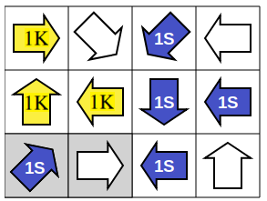

Aluksi on hyvä huomata, että tehtävä on "symmetrinen" nuolten sinisen ja keltaisen värityksen suhteen: jos meillä on laillinen ratkaisu, saadaan siitä toinen laillinen ratkaisu vaihtamalla jokaisen sinisen nuolen väri keltaiseksi ja jokaisen keltaisen nuolen väri siniseksi. Tämän vuoksi voimme ratkaisua muodostaessamme valita vapaasti, kumman väriseksi väritämme ensimmäisen nuolen. Tämän lisäksi voimme valita vapaasti myös sen, minkä nuolen väritämme ensimmäiseksi. Yritämme nyt ratkaista tehtävän löytämällä sellaisen ensimmäiseksi väritettävän nuolen, että sen värittämisen jälkeen voimme yksikäsitteisesti päätellä muidenkin nuolten värit. Alla väritämme ensimmäisen nuolen siniseksi, mutta ratkaisu löytyisi yhtä hyvin värittämällä se keltaiseksi.
Valitsemme vasemman alakulman nuolen ensimmäiseksi väritettäväksi nuoleksi (se tulee osoittautumaan toimivaksi valinnaksi).
|
Väritetään ensimmäinen nuoli siniseksi. |
|
Edellä väritetyn nuolen osoittama naapuri ei voi olla sininen: jos se olisi sininen, ei sen perässä oleva punaisella ruksilla merkitty nuoli voisi olla laillinen. Osoitetun naapurin on siis oltava keltainen. Toisaalta osoituksen suunnassa on oltava lisäksi yksi sininen nuoli, joten punaisella ruksilla merkityn nuolen on oltava sininen. |
|
Edellä keltaiseksi väritetty nuoli osoittaa vain yhtä nuolta, ja toisaalta osoitettu nuolikin osoittaa vain yhtä nuolta. Näiden kaikkien pitää siten olla keltaisia. |
|
Keskimmäisen rivin oikeanpuoleisin nuoli ei voi olla keltainen, koska se osoittaisi kahta keltaista nuolta. Nuolen on siten oltava sininen. |
|
Edellä keskimmäisellä rivillä siniseksi väritetyn nuolen on osoitettava siniseen nuoleen, ja tähän on jäljellä vain yksi vaihtoehto: sen vasemmanpuoleisen naapurin on oltava sininen. Toisaalta kyseinen naapuri osoittaa alas vain yhteen nuoleen, jonka siten myös on oltava sininen. |
|  |
Edellä alarivillä siniseksi väritetyn nuolen on osoitettava vain yhteen siniseen nuoleen. Sen välittömän vasemmanpuoleisen naapurin on siten oltava keltainen. |
|
Edellä alarivillä keltaiseksi väritetyn nuolen on osoitettava keltaiseen nuoleen. Tämä pakottaa värittämään oikean alakulman nuolen keltaiseksi. Tämän vuoksi oikean alakulman nuolenkin on osoitettava keltaiseen nuoleen, joten myös oikean yläkulman nuoli on väritettävä keltaiseksi. |
|
Oikean yläkulman nuolen on osoitettava vain yhteen keltaiseen nuoleen, joten ylärivin viimeinen värittämätön nuoli on väritettävä siniseksi. |
|
Ratkaisu on valmis! |
Tämä versio ei ole symmetrinen värien suhteen, koska sinisiä ja keltaisia nuolia koskevat erilaiset säännöt. Käytetään kuitenkin samaa ratkaisuperiaatetta kuin kolmen tähden versiossa: väritämme ensin jonkin aloitusnuolen ja pyrimme sen jälkeen päättelemään yksikäsitteisesti muidenkin nuolten värit. Jos aloitusnuolen väritysyritys johtaa umpikujaan, pitää meidän symmetrian puuttumisen vuoksi kokeilla samaan aloitusnuoleen myös toista väriä. Valitsemme jälleen aloitusnuoleksi vasemman alakulman nuolen. Tällä kerralla kokeilemme ensin keltaista väriä.
Ensimmäinen yritys. Väritetään vasemman alakulman nuoli keltaiseksi:
|
Vasemman alakulman nuoli osoittaa siitä kahden askeleen päässä olevaan takaisin osoittavaan nuoleen. Takaisin osoittava nuoli on väritettävä keltaiseksi, koska sen osoittamassa suunnassa ei voi enää olla kahta sinistä nuolta. Toisaalta näiden nuolten välissä oleva nuoli on väritettävä siniseksi, koska muuten nuolet osoittaisivat liian moneen keltaiseen nuoleen. |
|
Edellä siniseksi väritetty nuoli osoittaa vain kahteen nuoleen, joten molemmat osoitetut nuolet pitää värittää sinisiksi. |
|
Nyt edellä siniseksi väritetty oikealle alaviistoon osoittava nuoli osoittaa vain kahteen nuoleen, joten nekin on väritettävä sinisiksi. |
|
Päädyimme laittomaan tilanteeseen: punaisella reunustettu sininen nuoli ei voi osoittaa kahteen siniseen nuoleen. Tämä ratkaisuyritys päättyi tuloksettomana. |
Toinen yritys.
Kokeillaan uutta aloitusta vasemmasta alakulmasta, mutta nyt eri värillä.
|
Väritetään vasemman alakulman nuoli siniseksi. |
|
Tarkastellaan taas vasemman alakulman nuolen osoittamaa takaisin osoittavaa nuolta. Jos se olisi keltainen, pitäisi sen osoittaa keltaista nuolta eli nuolten välissäkin pitäisi olla keltainen nuoli. Tämä estäisi vasemman alakulman nuolta osoittamasta kahteen siniseen nuoleen. Näin ollen takaisin vasempaan alakulmaan osoittava nuoli ei voi olla keltainen. |
|
Takaisin osoittava nuoli on siten väritettävä siniseksi. Se osoittaa vain kahteen nuoleen, joten myös osoitetut nuolet on väritettävä sinisiksi. |
 |
Väritimme myös oikean yläkulman nuolen keltaiseksi, koska muuten vasemman alakulman nuoli osoittaisi liian moneen siniseen nuoleen. Edellä toisessa sarakkeessa siniseksi väritetty nuoli osoittaa ylös vain kahteen nuoleen, joten ne on väritettävä sinisiksi |
|
Edellä siniseksi väritetty oikealle alaviistoon osoittava nuoli osoittaa vain kahteen nuoleen, joten nekin on väritettävä sinisiksi. |
|
Edellä siniseksi väritetty ylös osoittava nuoli osoittaa vain kahteen nuoleen, joten nekin on väritettävä sinisiksi. Tämän seurauksena ylärivin vasemmalle alaviistoon osoittava nuoli on sininen, joten myös molemmat sen osoittamat nuolet pitää värittää sinisiksi. |
|
Alhaalta laskien toisen rivin ensimmäinen nuoli on nyt sininen ja osoittaa jo kahteen siniseen nuoleen. Toisen rivin viimeinen nuoli täytyy siten värittää keltaiseksi. Tämä juuri keltaiseksi väritetty nuoli osoittaa oikean yläkulman keltaiseen nuoleen, joten välittömästi sen yläpuolella oleva nuoli täytyy värittää siniseksi. |
|
Edellä siniseksi väritetty vasemmalle osoittava nuoli osoittaa jo kahteen siniseen nuoleen, joten saman rivin vasemmanpuoleisin nuoli on väritettävä keltaiseksi. |
|
Vasemman yläkulman nuoli on väritettävä keltaiseksi, koska muuten oikean alakulman nuoli osoittaisi liian moneen siniseen nuoleen. |
|
Vasemman sarakkeen oikealle alaviistoon osoittavan keltaisen nuolen on osoitettava keltaiseen nuoleen, joten alarivin toiseksi viimeinen nuoli on väritettävä keltaiseksi. |
|
Alarivin keltaisen nuolen on osoitettava keltaiseen nuoleen, joten sen vasen naapuri on väritettävä keltaiseksi. |
|
Ratkaisu on valmis! |
Tämä on tietojenkäsittelyä!
Kuvatuissa esimerkiratkaisuissa edettiin kokeilemalla eri vaihtoehtoja systemaattisesti. Valitsimme ensin jonkin lähtökohdan (ensimmäisen väritettävän nuolen), ja yritimme sen jälkeen täydentää ratkaisua askeleittain kohti kokonaista ratkaisua. Jos jossain kohdassa päädyttiin umpikujaan, palasimme alkuun yrittämään toisenlaista lähtökohtaa. Tätä menettelyä jatketaan, kunnes halutut ratkaisut on löydetty tai kaikki mahdolliset ratkaisuvaihtoehdot on kokeiltu.
Edellä kuvattu ratkaisuperiaate tunneraan tietojenkäsittelyssä nimellä peruuttava haku. Menetelmä on suhteellisen yksinkertainen toteuttaa ja sopii varsinkin sellaisten hakuongelmien ratkaisuun, joissa haun aikana mahdollisesti kokeiltavien mahdollisten ratkaisuvaihtoehtojen lukumäärä ei ole valtavan suuri.
Tehtävän ongelmanasettelu muistuttaa tietojenkäsittelytieteessä nimellä graafin väritys tunnettuja ongelmia. Kts. esim. https://en.wikipedia.org/wiki/Graph_coloring (englanniksi).